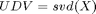

PCA Empirical Descriptions
Contents
There were a lot of things that I think should be a bit more clear, including stuff that I didn't know before, so I decided to do a write up about how stuff relates with the SVD and PCA.
The SVD and Eigenvalues, or Why we need to center our matrices before PCA
Lets first read in the Z matrix from Hunter and Takane(2002).
load('Z_takane106-7.mat');
You can see that the Z matrix is in it's raw form. It has not been standardized or centered at all
head(Z); % print out the first 5 rows and columns of a matrix
ans =
4 3 3 0
5 5 6 2
6 5 6 5
5 5 1 0
We will test the assertion that the sum of the eigenvalues of a matrix is equal to the total variance in a matrix. This will be kind of obvious once we connect the formulas. First, we will get the total variance of the matrix manually.
meanZ = mean(mean(Z)); % Grand mean of Z [m, n] = size(Z); Sq_Z = (Z-meanZ).^2; % Calculate the Squares of Z SSq_Z = sum(sum(Sq_Z)); % Sum the Sum of Squares for all columns SSq_Z/(m-1)
ans =
77.3553040666584
This is equivalent to the formula
We can then do the SVD
[U,D,V] = svd(Z, 'econ'); eigen = trace(D.^2)/(m-1) %trace is the sum of the diagonal of a matrix
eigen =
214.46511627907
You'll notice that the eigenvalues and the variance aren't equal in this case. This is because the SVD takes in an uncentered matrix.
To understand why, lets take a look why the SVD can become equal to the PCA. The SVD is equal to the eigendecomposition of the covariance matrix by the following proof:
- Let 
- By eigendecomposition , where Q is the series of eigenvectors and L the eigenvalues of the covariance matrix
- Where U and V are the eigenvectors and D are the eigenvalues of the X matrix
- By substitution
- By properties of transpose
- By the fact that U is a singular matrix and therefore U'*U = I(the identity matrix):
- By equivalence
- Therefore, Q = V and
The formula basically proves the relation between the eigenvalues of the covariance matrix of X and eigenvalues of X. But if you go to line 2, you can see the formula . The formula for the covariance is:

And variance is:
You'll notice that the formula has no subtraction in it (except for the -1). Therefore, it is equivalent to and for the covariance and variance respectively. Therefore, the covariance formula only works if the means of the matrix are 0. And following, that L(the eigenvalues of the covariance matrix) is equal to D.^2/(N-1) only if the matrix is centered. It remains to be proven that the trace of a square matrix is equal to the sum of eigenvalues, which is a bit more complicated, but you can see it here:
A = rand(10); trace(A)-sum(real(eig(A)))<0.01
ans =
1
Lets wrap the sum of squares procedure into a formula so we can compare different preprocessing steps. I saved this as assert_SS_equals_SVD.m
function assert_SS_equals_SVD(Z, condition) meanZ = mean(mean(Z)); % mean of Z [m n] = size(Z); Sq_Z = (Z-meanZ).^2; % Calculate the Squares of Z SSq_Z=zeros(1,n); % make new variable for the sum of columns for i = 1:n % loop to compute sum of squares for each column SSq_Z(1,i) = sum(Sq_Z(:,i)); end SSq_Z = sum(SSq_Z); % Sum the Sum of Squares for all columns % To get Variance devide by m or m-1 [U,D,V]=svd(Z, 'econ'); try assert(abs(SSq_Z-trace(D.^2))<0.001); catch warning(['SVD fails on condition: ' condition]); end end
assert_SS_equals_SVD(Z, 'Raw Scores'); assert_SS_equals_SVD(bsxfun(@minus, Z, mean(Z)), 'Columns Centered'); assert_SS_equals_SVD(zscore(Z), 'Columns Standardized'); assert_SS_equals_SVD(zscore(zscore(Z')'), 'Columns and Rows Standardized');
Warning: SVD fails on condition: Raw Scores Variance and eigenvalues are both equal on condition: Columns Centered and are ~71.7188 Variance and eigenvalues are both equal on condition: Columns Standardized and are ~17 Variance and eigenvalues are both equal on condition: Columns and Rows Standardized and are ~17
As expected, only the raw scores fail. So we will normalize the Z matrix, and read in the G matrix and test the GC.
Z = zscore(zscore(Z')');
load('G.mat');
head(G);
ans =
1 0 0 0
1 0 0 0
1 0 0 0
1 0 0 0
We regress the Z on G with the formula:
Note that this is simply the Normal Equation: https://en.wikipedia.org/wiki/Linear_least_squares_(mathematics)#The_general_problem with G substituted for X and Z substituted for y
GC = G*pinv(G'*G)*G'*Z; head(GC)
ans =
Columns 1 through 3
1.12161186444557 0.847579673341988 0.417725074791072
1.12161186444557 0.847579673341988 0.417725074791072
1.12161186444557 0.847579673341988 0.417725074791072
1.12161186444557 0.847579673341988 0.417725074791072
Column 4
-0.9779316130563
-0.9779316130563
-0.9779316130563
-0.9779316130563
Look at the mean of the GC matrix
GC_mean = mean(GC); GC_mean(1:5)'
ans =
0
-1.4130111222502e-16
-3.28020439093796e-17
1.24269281733611e-16
2.37184009806283e-16
And the standard deviation
st_dev = std(GC); st_dev(1:5)'
ans =
0.746353376417048
0.604564851475264
0.915970861198117
0.614536867772993
0.902238233705598
So in this case, the mean is still ~0 but the standard deviation is not. Therefore, the GC is centered but not standardized. This means that we should expect the variance and the eigenvalues to match. j
assert_SS_equals_SVD(GC, 'GC matrix');
Variance and eigenvalues are both equal on condition: GC matrix and are ~10.6286